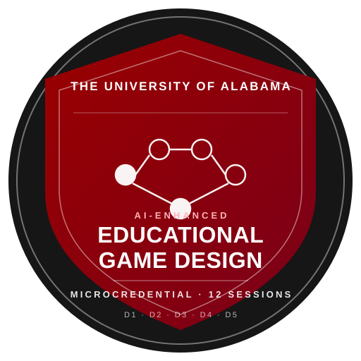

The AI-enhanced Educational Game Design microcredential is issued by The University of Alabama College of Education to learners who demonstrate, with evidence, that they can carry a learning problem from a defensible design statement through a target-learner-tested prototype to an implementation-ready specification.
The holder has produced five deliverables (D1–D5), each judged against a published rubric with five criteria at four performance levels. Every criterion must reach Proficient — the credential is non-compensatory.
Name a learner, context, and measurable shift; separate observation from assumption; revise in response to specific critique. (D1 rubric)
Classify objectives by type, choose mechanics with defensible rationale, name risks and declined alternatives, trace every row to a context constraint. (D2 rubric)
Produce a paper prototype and facilitator guide another person can run without the author; iterate at least three cycles with documented evidence. (D3 rubric)
Design and run a protocol with three or more target learners, separate observation from interpretation, rank findings by impact and effort, defend a cut line. (D4 rubric)
Produce a coherent implementation spec — state machine, event map, Three.js bridge — that cites D1–D4 and names its known limits. (D5 rubric)
Exemplary on one deliverable does not cover Developing on another. Every rubric row has a floor; every floor is required.
Every field below is published as Open Badges 2.0 JSON so that external verifiers, LMS platforms, and digital wallets can consume the credential without trusting a human description.
/cohort/<term>/portfolios/<learner-id>/, linked from the assertion's evidence[] array.educational-game-design instructional-design learning-experience-design educational-technology assessment microcredentialThe OBv2 BadgeClass above is the backward-compatible form. In parallel we publish an OBv3 / Verifiable Credentials 2.0 expression of the same credential — which a learner can import into a Learner Credential Wallet (DCC), verify without contacting our server, and present selectively to employers. This is the format the Digital Credentials Consortium at MIT and peer institutions have converged on.
https://www.w3.org/ns/credentials/v2 + https://purl.imsglobal.org/spec/ob/v3p0/context-3.0.3.jsonAchievement inside a VerifiableCredential / OpenBadgeCredential envelope.did:web:teachplay.dev) so verification does not require contacting us.eddsa-rdfc-2022 cryptosuite, Ed25519 signature over the canonicalized credential. Example contains a placeholder proof; signing pipeline is documented separately.OBv2 still has the widest LMS / backpack support; OBv3 is where employer wallets and cross-institution transfer are moving. Publishing both costs us one extra JSON file and buys learners a decade of forward compatibility. The underlying rubric and evidence are identical — only the expression changes.
Once signed, a learner's credential is theirs — not ours. These three handoff paths move the
OBv3/VC 2.0 assertion out of this handbook and into a wallet the learner controls. The first path
is the primary one (DCC Learner Credential Wallet over a dccrequest:// deep link);
the others exist so learners on other wallets aren't locked out.
Opens your wallet via dccrequest://. The wallet fetches the signed VC from our domain, verifies the proof, and stores it locally. Works with DCC's Learner Credential Wallet and wallets implementing the same request pattern.
Open wallet →
Save the signed credential as a file. Any VC 2.0-compatible wallet (Lissi, Trinsic, Microsoft Entra, Polygon ID) can import it via their "add credential from file" flow.
Download JSON →
An openid-credential-offer URL that any OID4VCI wallet can consume. Copy and paste into the wallet, or show it as a QR so a phone camera can scan.
Copy + show QR →
The signed VC in credential/assertion-example-v3.json contains a placeholder
proof. A production deployment swaps in (a) an Ed25519 key held under the issuer's DID
(did:web:teachplay.dev), (b) a signing pipeline that canonicalizes the credential
via URDNA2015 + eddsa-rdfc-2022, and (c) a real OID4VCI issuer endpoint at
/oid4vci/issue. See L4 design note for the full architecture.
A microcredential is only transferable if it cites frameworks outside its own walls. Below are the
five alignments published in the BadgeClass. Add more by editing credential/badge-class.json.
Educators design authentic, learner-driven activities and environments that recognize and accommodate learner variability. Directly addressed by D1, D2, and the S2–S5 arc.
Educators facilitate learning with technology to support student achievement of standards. Addressed by D3 (facilitator guide) and the S7 workshop.
Educators understand and use data to drive their instruction. Addressed by D4 (playtest report, observation-vs-interpretation separation) and the S10 data audit.
Representation, Action & Expression, and Engagement as evaluated via the accessibility audit in S10 and the UDL 3.0 crosswalk handout.
Centers learner voice, context, and accessibility in the design process. Non-compensatory Proficient on the accessibility criteria operationalizes the policy intent.
An Assertion is the JSON document that ties a specific learner to the BadgeClass with a set of evidence URLs. Below is the shape — hashed recipient identity, issued date, verification type, and one evidence entry per deliverable.
{
"@context": "https://w3id.org/openbadges/v2",
"type": "Assertion",
"id": "https://.../credential/assertions/EXAMPLE-2026-0001.json",
"recipient": {
"type": "email",
"hashed": true,
"salt": "eg-design-2026-cohort",
"identity": "sha256$EXAMPLE_HASHED_RECIPIENT_EMAIL"
},
"issuedOn": "2026-05-02T00:00:00Z",
"badge": "https://.../credential/badge-class.json",
"verification": { "type": "HostedBadge" },
"evidence": [
{ "id": ".../D1-design-problem-statement.pdf", "name": "D1 · Design Problem Statement", ... },
{ "id": ".../D2-crosswalk.csv", "name": "D2 · Objective × Mechanic Crosswalk", ... },
{ "id": ".../D3-prototype/", "name": "D3 · Paper Prototype + Guide", ... },
{ "id": ".../D4-playtest-report.pdf", "name": "D4 · Playtest Report", ... },
{ "id": ".../D5-implementation-spec/", "name": "D5 · Implementation Spec", ... }
]
}
Open Badges 2.0 recommends hashing the recipient email with a per-issuer salt so that the assertion can be published publicly — as evidence of the credential — without exposing a learner's identifier. Verifiers recompute the hash from the learner's claimed email to confirm.
Paste an assertion URL (or the learner id — the tool resolves it to
credential/assertions/<id>.json) and this page performs four structural checks:
the issuer is did:web:teachplay.dev, the proof's verification method matches a key in
the current DID document, the current date falls inside validFrom, and the required
OBv3 fields are present. Cryptographic signature verification (eddsa-rdfc-2022 over URDNA2015) runs
in the learner's wallet or via node tools/verify-vc.mjs — it is not attempted in the
browser because the canonicalization + signature libraries would quadruple this page's weight for
a check the wallet already does.
For a full cryptographic check (Ed25519 signature + revocation status), use the credential verifier →
The Assertion is hosted at a stable URL under the issuer's domain. Any verifier resolving the URL can read the JSON and check the chain back to the BadgeClass and Issuer profile.
Rubrics are reviewed every August before the fall cohort. Any change bumps the rubric version; previously-issued badges cite the rubric version active at their issue date.
A Developing or lower score triggers a revision window with a named path to Proficient. The original is not averaged; only the revised artifact is scored for credential purposes.
A microcredential is most valuable when it is not terminal. Below is the proposed articulation path for learners who want to carry the work forward into formal graduate study. The targets are drafts that require registrar, department, and provost approval — they are published here as the design intent, not as a policy guarantee.
The 36 contact hours + five deliverables are scoped to be assessable as a 3-credit elective under Prior Learning Assessment (PLA) rules. Evidence: the full D1–D5 portfolio + the OBv3 assertion + rubric sign-offs. Requires College of Education PLA committee review.
With two additional microcredentials from the College of Education's AI-in-Education family (e.g. Learning Analytics, AI-Assisted Assessment), this stacks into a 9-credit graduate certificate — a resume-ready, transcript-visible credential.
The OBv3 assertion + CLR 2.0 export (see Analytics) is consumable by Learning and Employment Record (LER) platforms aligned with the T3 Innovation Network — so that a hiring manager can verify the specific skills, not just the credential title.
Three things: (1) rubric criteria mapped to public skills taxonomies so external reviewers can read the credential without insider knowledge — see the alignment matrix; (2) a stable, signed OBv3 assertion URL that persists beyond program changes; (3) a written PLA articulation agreement on file. Items (1) and (2) are implemented; (3) is the open policy step.
IBM SkillsBuild and Cisco Networking Academy established the pattern: a credential gains signal when
a practicing employer or domain authority signs an endorsement of it. Our design adds an OBv3
EndorsementCredential layer so that a school principal, district CTO, or ed-tech
employer can cryptographically endorse either the BadgeClass (“we accept this as evidence of the
claimed competency”) or an individual learner's assertion (“we observed this learner perform
at this level”).
Achievement (the badge itself — e.g. “we recognize graduates of this microcredential as qualified to lead a cross-disciplinary game-based learning project”) or an individual AchievementCredential (“this specific learner's D4 playtest exceeded our expectations”).alignment items pointing to the endorser's own competency expectations — creating a bridge between our framework and theirs.
The block below is fetched from the signed artifact on page load. The endorser signs under their own
DID (did:web:teachplay.dev:endorsers:tcs) with a separate Ed25519 key from the issuer's,
so verifying this credential exercises an independent trust anchor. Run
node tools/verify-vc.mjs credential/endorsements/tcs-template-v3.json to check the signature.
Loading signed endorsement…
The sessions are how the work gets done; the rubrics are what the work is judged against. Open D1 in the rubric viewer, read the Proficient column, then open Session 02 and build toward it.
Development of the AI-enhanced Educational Game Design micro-credential — handbook, site, rubrics, badge infrastructure, and pilot delivery — is funded by the Alabama Commission on Higher Education (ACHE) as part of the All-in-Alabama AI Microcredential program. UA institutional support also covers the Three.js implementation toolkit module and the public verifier.
All-in-Alabama AI Microcredential program. Mid-year report filed 2025-12-05.
Implementation FOAP A-GR2A973-212501-200.
Department of Educational Leadership, Policy, and Technology Studies. Faculty PI: Jewoong Moon. Verifier hosting via Cloudflare Workers under teachplay.dev.
Findings and views expressed are those of the PI and do not necessarily reflect the views of the Alabama Commission on Higher Education or The University of Alabama.